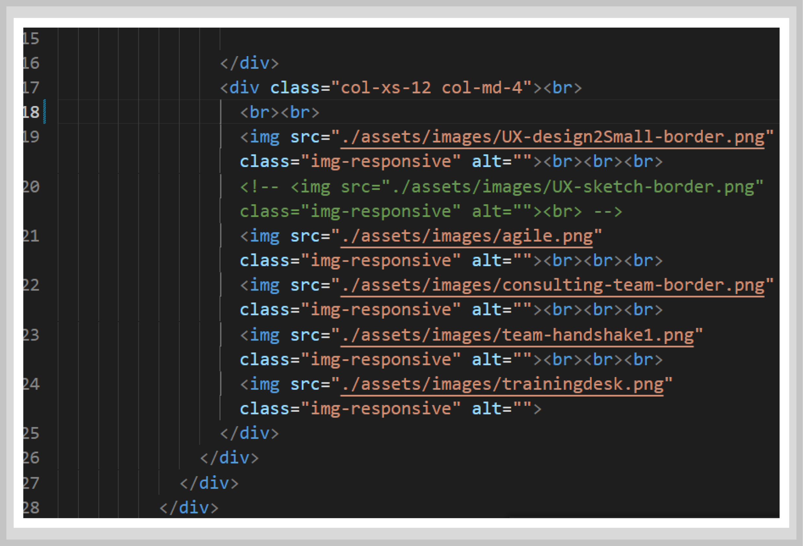
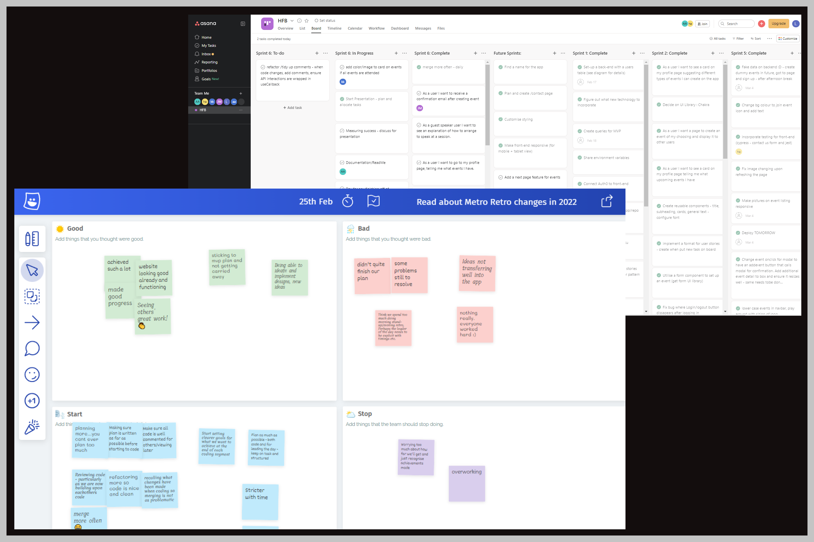

Get to know me.
As a UX/UI Designer, Researcher and Software Engineer, I enjoy delivering applications that exceed client expectations and delight the user. I am recognised for my tenacity when faced with a challenge, my attention to detail and supportive team-player style.
.
UX / UI Design.
Users are the project heartbeat, with user and stakeholder research having pride of place in decision making, from initial ideation, branding and wireframing, through to user testing and final delivery.
Once a clear insight is gained into the user's problem, flow and story, the interface design is developed to create the optimum user experience.
Software Engineering.
Recently graduated from the intensive School of Code Bootcamp. Developed skills in full stack development, pair programming and completed team projects from ideation to deployment. Tech used includes JavaScript, HTML5, CSS3, ReactJS, NextJS, Postman, SQL, PostgresSQL, NodeJS, ExpressJS, Testing using Cypress & Jest, Heroku, Netlify.
Agile Team Working.
Enjoy collaborating in agile sprints, facilitating stand-ups, reviews and retrospectives, using Kanban to manage workflow, accountability and continous delivery. Value feedback to identify achievements, blockers and improve with each iteration. Promote awareness of each others' strengths, preferences and work styles and team dynamic of mutual trust and support.
Business Psychology.
As a free-lance business psychology consultant my vision is to help organisations and people get the best from each other. Working as an associate with partner consultancies, I enjoy making a difference to businesses, teams and individuals within them. Some of my areas of expertise include research surveys including designing and running focus groups, questionnaires and presentation of results, training, 360 degree feedback, assessment for selection and management development.
Franchise Owner.
Set up and ran a high-end domestic housekeeping franchise, delivering top quality services to clients. Managed all business areas, sales and marketing, finance, operations, HR, recruitment, training, admin and customer relationship management.
Lecturer and Teacher.
Designed and delivered courses in a variety of educational settings, working in professional teams, collaborating with and supporting colleagues. Monitored skills development during work placements and supported students academically and pastorally.


